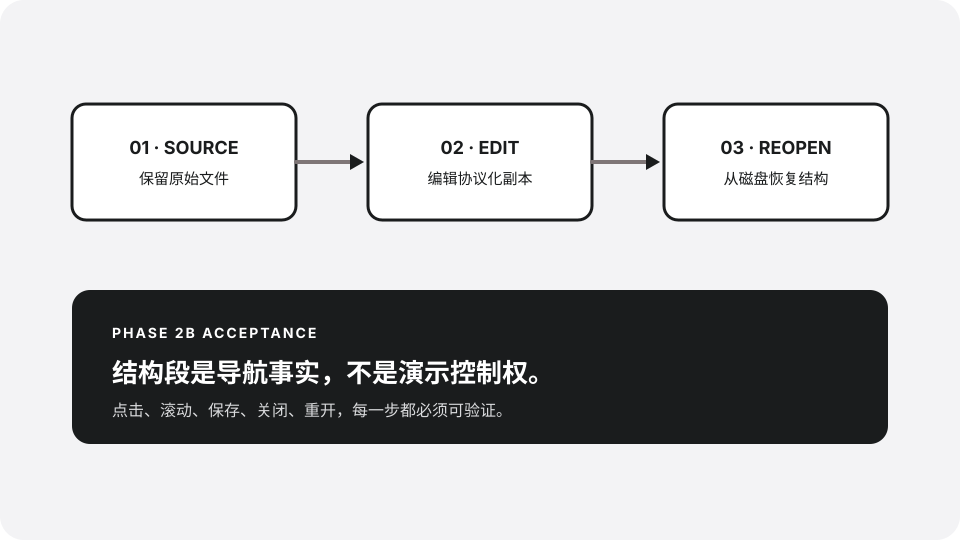

01 · Source boundary
从真实 HTML 开始，始终保留原件。
这个样本用于验证 Nutbook 能从普通纵向页面创建结构化副本，并且不会把未来 NBskill 当作前置条件。
扫描
从真实资料库入口发现文件。
转换
只在 detached clone 写入结构与编辑 metadata。
验证
用原件与副本 SHA-256 证明边界。
02 · Long section
长段仍然只有一张结构卡
结构导航描述的是文档语义，而不是屏幕切片。无论这个段落占据一个视口还是三个视口，左侧 rail 都只能出现一个条目。
用户滚动页面时，活动段由真实滚动位置和可见比例计算。点击结构卡时，运行时必须滚动正确的 root，并等待目标段真正成为活动段后再确认。
如果页面拥有多个滚动祖先、变换后的根节点或无法测量的布局，结构适配器应安全降级为普通 HTML 编辑，而不是猜测坐标。
保存不是内存里的成功。Rust 原子提交当前 `.nutbook-editable.html` 副本之后，关闭并重开必须从磁盘文件恢复文字、图片和结构 metadata。
快速点击、最小化恢复、切换标签和晚到消息，都不能让旧会话覆盖当前活动段。这是 Phase 2B 的运行面完成标准。
03 · Commit and reopen
修改图片，然后从磁盘重开
这张本地图片是稳定验收对象。替换它、保存副本、关闭并重开后，结构卡数量和页面 ID 必须保持一致。

- 原件 SHA-256 未改变
- 副本内容与 SHA-256 已更新
- 关闭并重开后仍有三张结构卡